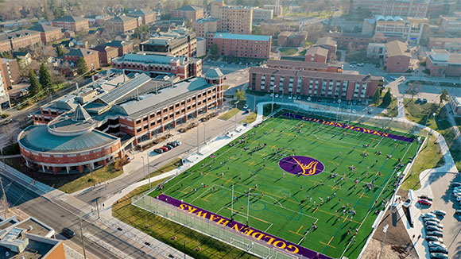
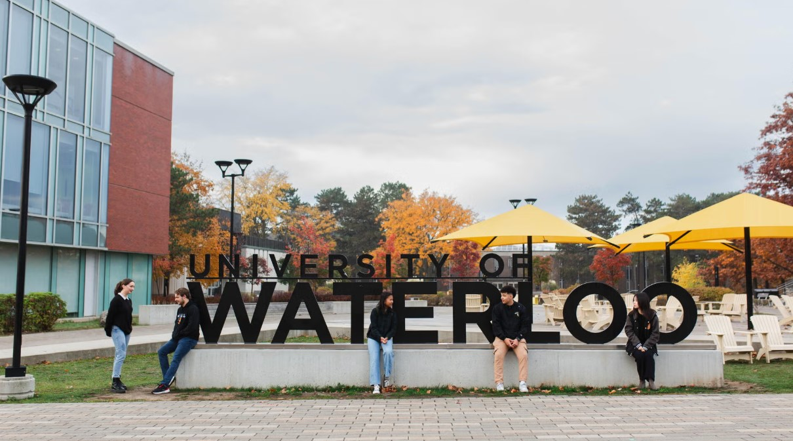

The International Congress on Mathematical Software is a bi-annual congress that gathers the mathematicians, scientists and computer scientists who are interested in the development of mathematical software. The ICMS has traditionally been a satellite meeting to the International Congress of Mathematicians, which this year is being held in Philadelphia the week following the ICMS. For more information on past conferences, see the ICMS home page.
(time for all deadlines is 23:59 anywhere on earth)
We thank the following organizations for their generous sponsorship: